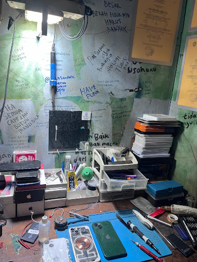
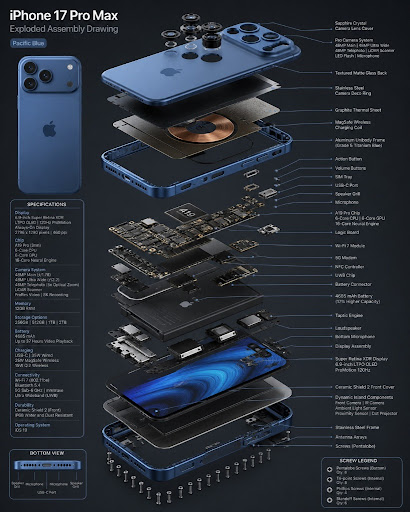
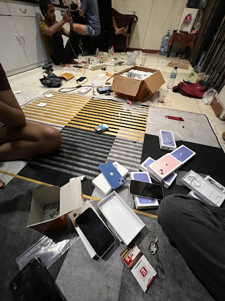
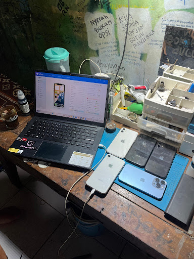
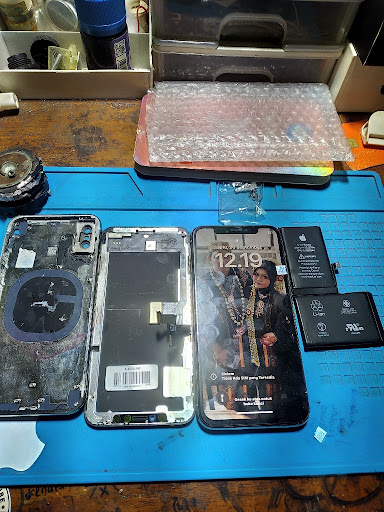
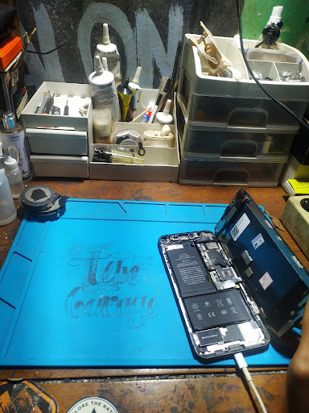

Helicopter Service
Maintenance support, inspection, troubleshooting, dan technical assistance untuk kebutuhan unit.
GARAGE TB Bengkel Helikopter dan Tank menyediakan layanan teknis, maintenance, repair, inspection, fabrication, serta technical support — dengan tambahan layanan service iPhone.
GARAGE TB dibangun dengan pendekatan kerja yang menempatkan ketelitian, keselamatan, dokumentasi, dan kualitas pengerjaan sebagai bagian penting dari setiap pekerjaan.
Website ini menampilkan profil, layanan, dokumentasi workshop, dan kanal komunikasi GARAGE TB dalam satu tampilan perusahaan yang modern.
Lihat prinsip kerja →Structured process • Inspection • Repair • Testing • Documentation
Portofolio layanan dapat disesuaikan dengan kebutuhan pekerjaan dan scope teknis.
Maintenance support, inspection, troubleshooting, dan technical assistance untuk kebutuhan unit.
Pemeriksaan, maintenance, repair, dan dukungan teknis kendaraan khusus dan heavy equipment.
Fabrication dan pengerjaan komponen/struktur sesuai drawing atau kebutuhan pekerjaan.
Inspection, checklist, quality control, reporting, dan dokumentasi pekerjaan.
Diagnosis dan perbaikan sistem kelistrikan serta perangkat elektronik pendukung.
Hardware, software, troubleshooting, maintenance perangkat, dan pemeriksaan komponen iPhone.
Dokumentasi foto workshop yang Anda kirim digunakan langsung pada halaman ini.









Setiap pekerjaan dapat ditata dalam alur pemeriksaan, diagnosis, pengerjaan, testing, dan dokumentasi sehingga pelanggan memperoleh informasi yang jelas mengenai pekerjaan.
Untuk konsultasi, survey, maintenance, repair, atau kebutuhan service iPhone, hubungi GARAGE TB.